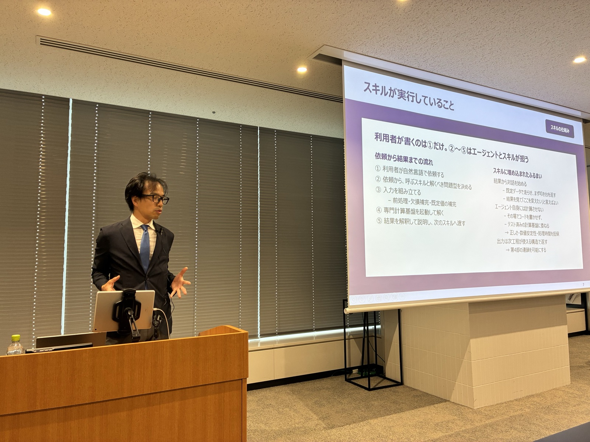
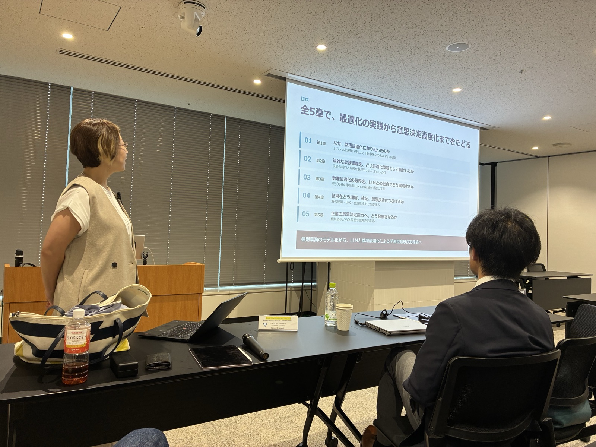
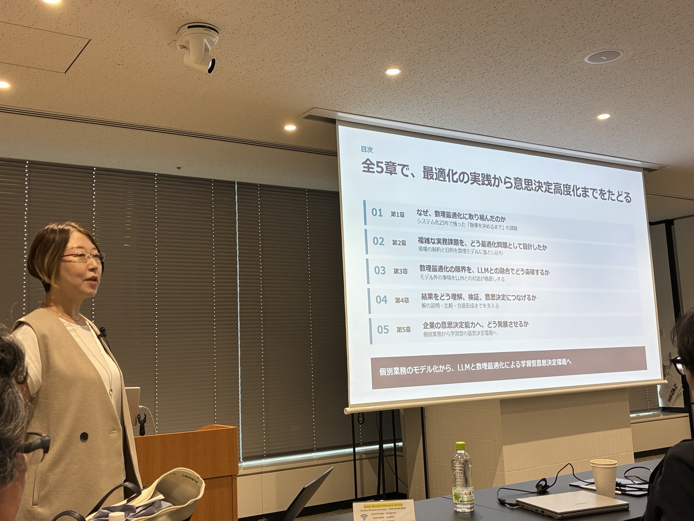
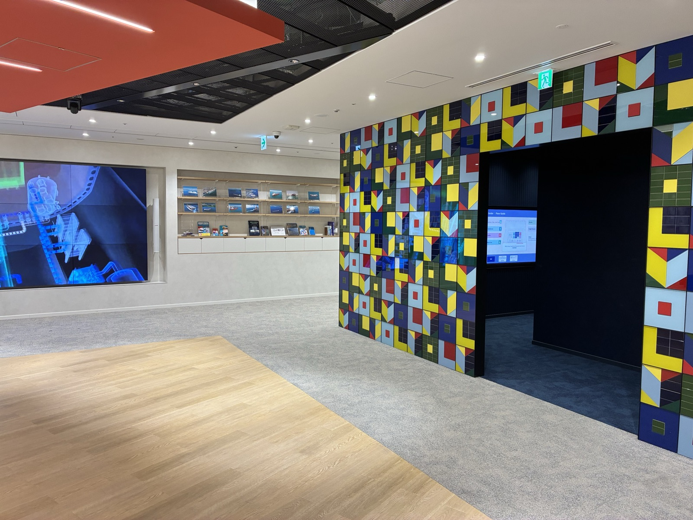
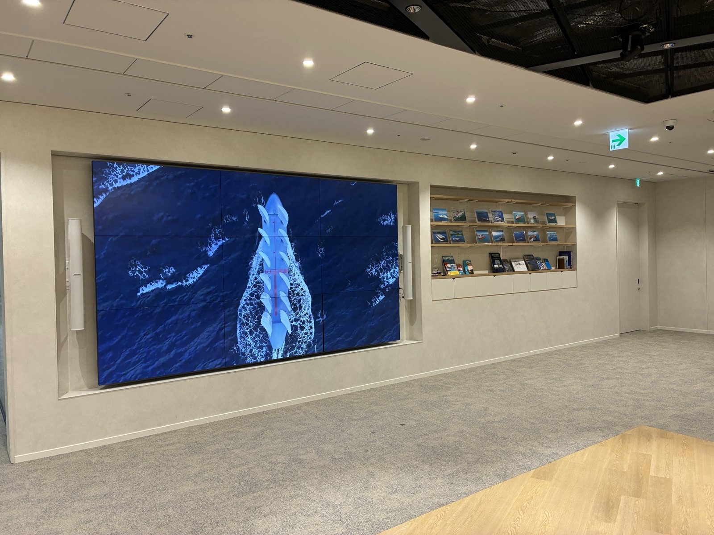
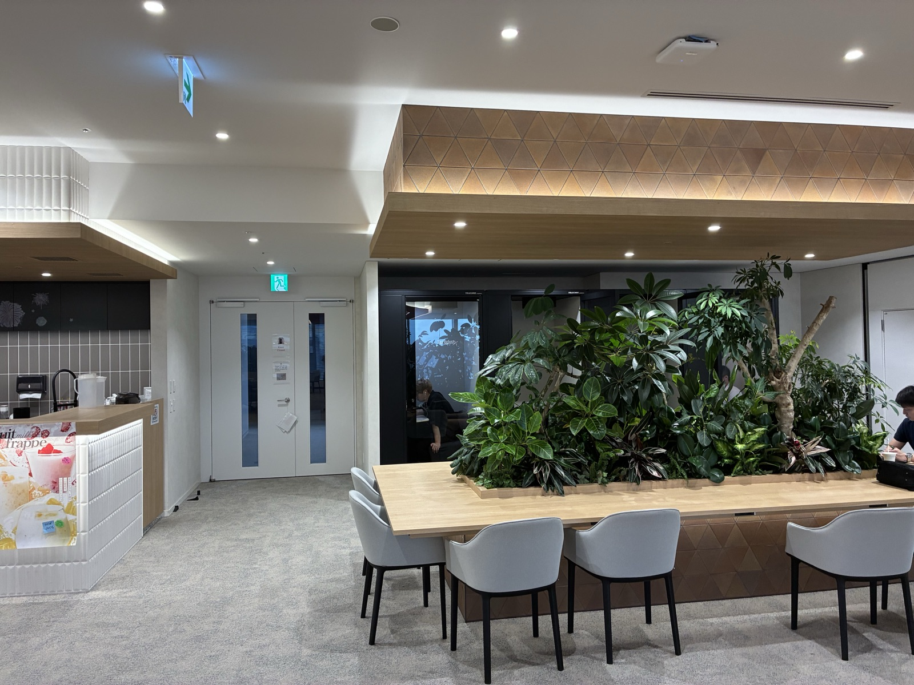
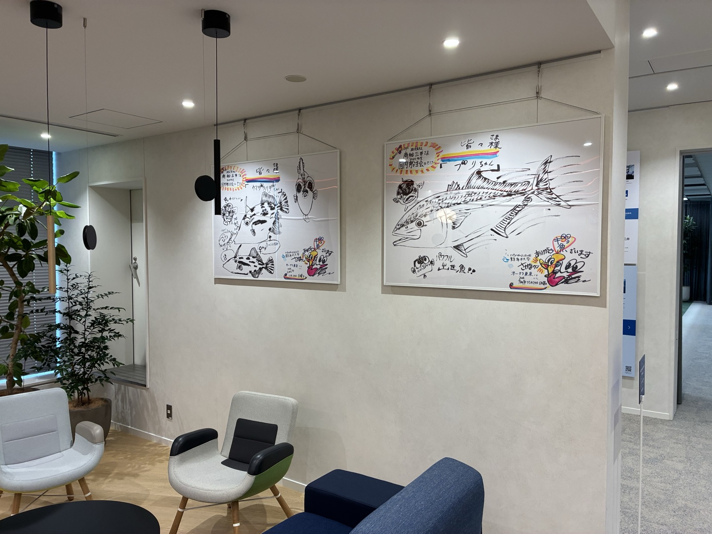
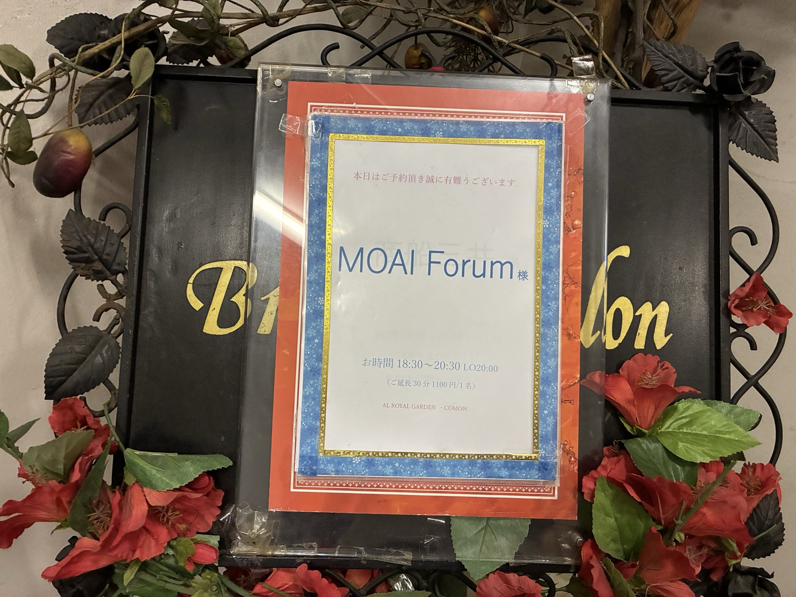

第10回 MOAI 研究部会
日時：2026年8月18日（火曜日） 15:00 - 18:00
場所：商船三井 虎ノ門エンパワーメントセンター「SANGO」（東京都港区虎ノ門2丁目6-1 虎ノ門ヒルズステーションタワー 35F）
形式：対面開催（参加者２９名、懇親会参加者２１名）
15:00 - 16:00 講演者：久保 幹雄 氏（MOAI-Lab CTO / 東京海洋大学 教授）
講演タイトル：エージェントスキル：自律型 AI が変える最適化とサプライチェーンの未来 講演スライド
アブストラクト：近年、用途ごとに専用のエージェントをゼロから構築するという発想は、大きく見直されつつある。現在では、強力な汎用エージェントを基盤とし、その上に専門知識を「スキル」として追加していく設計が、より現実的で拡張性の高いアプローチとして注目されている。本講演では、AIの黎明からエージェントスキルまでの道程、スキルの作り方、便利なスキルの紹介とその裏にあるエンジニアリングの解説を行う。
16:10 - 17:10 講演者：小林 和博 氏（MOAI-Lab CAIO / 青山学院大学 准教授）
講演タイトル：エージェントスキルによるサプライチェーン最適化: 需要予測から統合事業計画まで 講演スライド
アブストラクト：近年、サプライチェーンマネジメントにおいて、領域ごとに専用システムを構築するアプローチが大きな転換点を迎えている。需要予測から配送・物流ネットワーク・リスク・収益管理まで、縦割りに分かれた意思決定問題に対し、長年研究開発されてきた数理最適化エンジン群をエージェントスキルとして再パッケージし、自然言語のひと言で適切なエンジンが選択・起動される枠組みへの転換が求められている。本講演では、こうしたスキル群と背後にある最適化モデルの考え方を解説し、領域横断のスキルを束ねた S&OP の自動オーケストレーションが、次世代の統合事業計画（IBP）の現実的な姿となりうることを論じる。
17:20 - 17:50 講演者：坂本 淳子 氏（商船三井システムズ 執行役員）
講演タイトル：企業における最適化活用と意思決定高度化へのアプローチ
アブストラクト：近年、個別業務ごとに最適化モデルやシステムを構築するというアプローチは、大きな転換点を迎えている。個別最適の積み上げだけではなく、データ、シミュレーション、AIを組み合わせることで、企業全体の意思決定を高度化する枠組みへと発展させることが求められている。本講演では、企業における最適化の取り組みを具体例として、複雑な実務課題をどのように構造化し、実運用に耐える最適化問題として設計し、その先の意思決定の高度化につなげるのか、についてアプローチを紹介する。
終了後に懇親会（ロイヤルガーデン虎ノ門）を開催しました。
会場の様子







